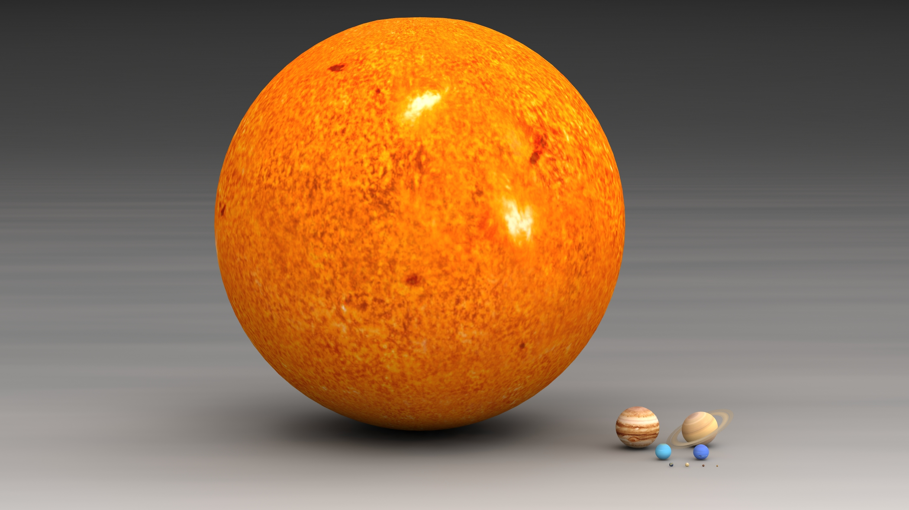

Le Système solaire est le système planétaire du Soleil, auquel appartient la Terre. Il est composé de cette étoile et des objets célestes gravitant autour d'elle : les huit planètes confirmées accompagnées de plus de deux-cents satellites naturels connus (appelés usuellement des « lunes »), les cinq planètes naines et leurs neuf satellites connus, ainsi que des milliards de petits corps (la presque totalité des astéroïdes et autres planètes mineures, les comètes, les poussières cosmiques, etc.).

Comparaison de taille entre le soleil et les 8 planètes confirmées.
De façon schématique, le Système solaire est composé du Soleil,
qui le domine gravitationnellement, il comprend 99,85 % de sa masse, et fournit de l'énergie
par fusion nucléaire de l'hydrogène en hélium; puis, par ordre d'éloignement croissant à
l'étoile, le Système solaire interne comprend quatre planètes telluriques internes,
principalement composées de roches et de métaux (Mercure, Vénus, la Terre et Mars)
et une ceinture d'astéroïdes de petits corps rocheux, dont la planète naine Cérès.
Plus loin orbitent les quatre planètes géantes du Système solaire externe :
successivement deux géantes gazeuses constituées majoritairement d'hydrogène et d'hélium
que sont Jupiter et Saturne, qui contiennent par ailleurs la grande majorité de la masse
totale en orbite autour du Soleil, et deux géantes de glaces que sont Uranus et Neptune,
contenant une plus grande part de substances volatiles comme l'eau, l'ammoniac et le méthane.
Tous ont une orbite proche du cercle et sont concentrés près de l'écliptique,
soit le plan de révolution de la Terre autour du Soleil.
Les objets situés au-delà de l'orbite de Neptune, dits transneptuniens,
comprennent notamment la ceinture de Kuiper et le disque des objets épars,
formés d'objets glacés. Quatre planètes naines glacées se trouvent dans la région
transneptunienne et sont également appelées plutoïdes : Pluton, auparavant classée comme
planète, Hauméa, Makémaké et Éris.